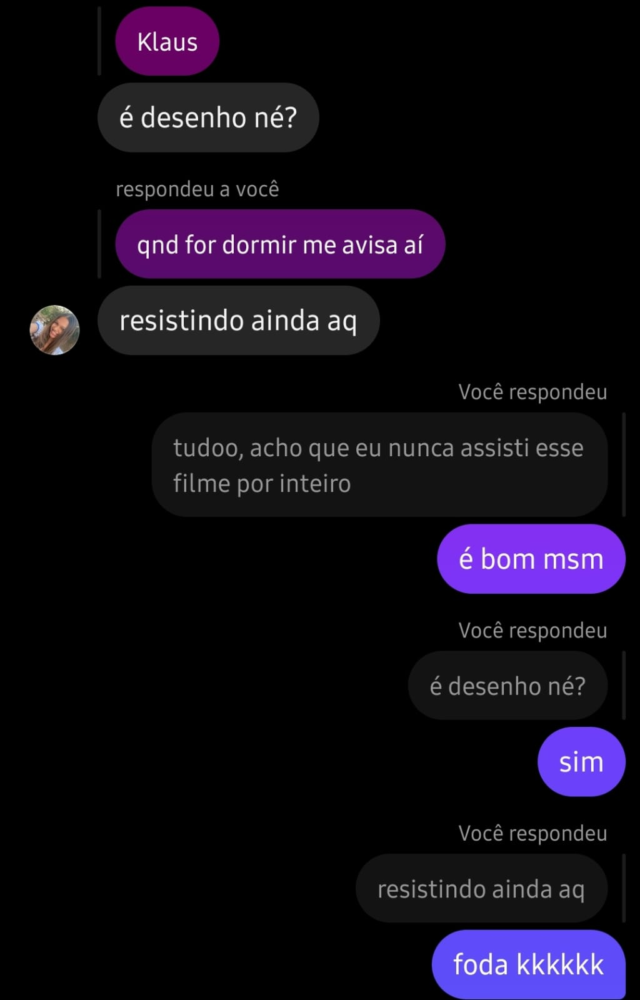
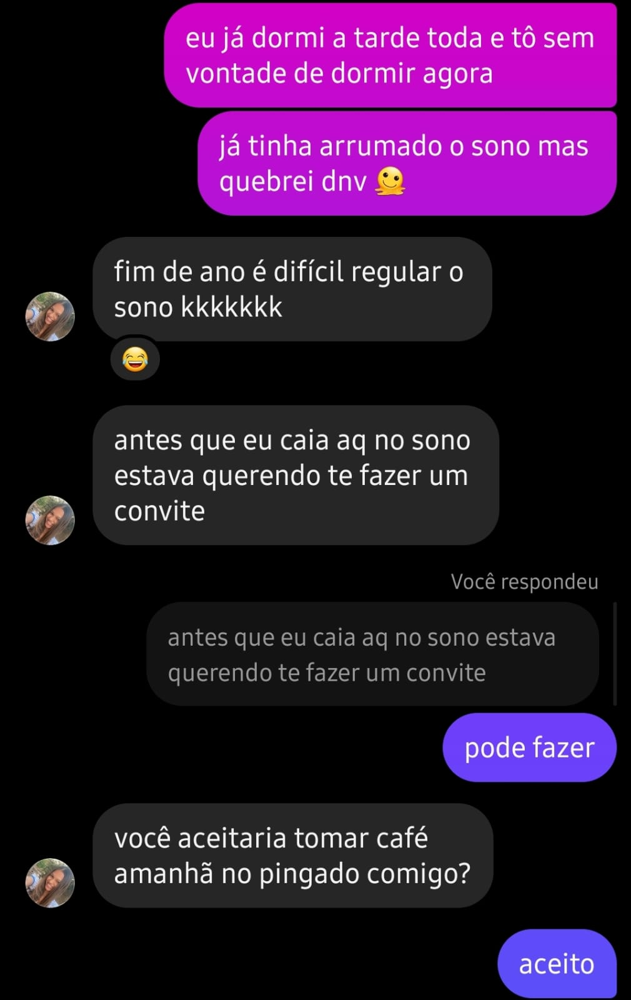
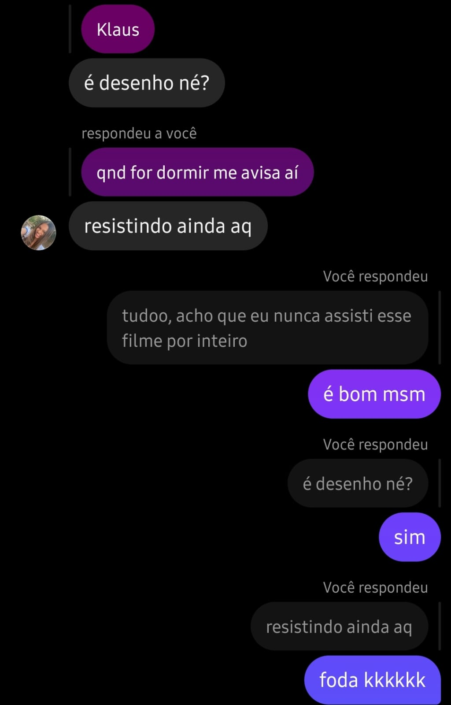
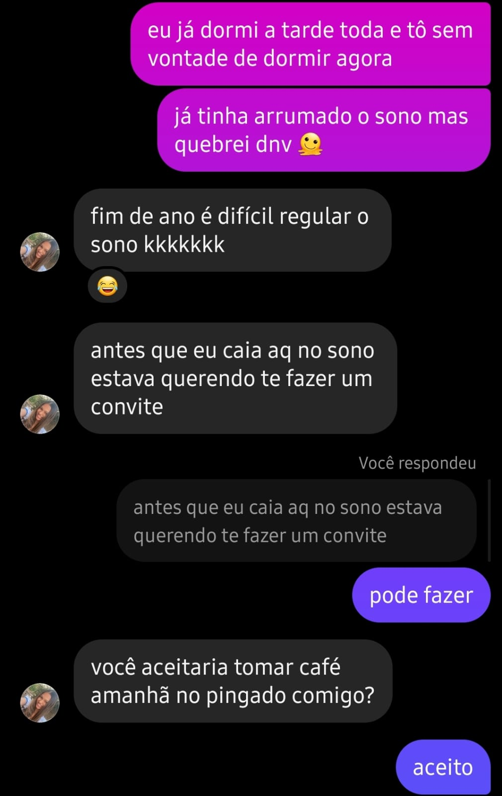

Eu & Você
Meu amor, no Dia da Mulher, quero te lembrar o quanto você é incrível. Sua força, beleza, inteligência e carinho me inspiram todos os dias. Tenho a sorte de caminhar ao seu lado. Te amo muito, hoje e sempre.
Desça para ver o que preparei.
⇩🌠 Onde tudo começou
 



Nossas Fotos 🌸
J❤️Y
Para Você amor
Meu amor, se existe algo que eu tenho certeza nessa vida, é que você sempre terá o meu coração. Desde o momento em que olhei nos seus olhos, me apaixonei, e esse amor só cresceu, transformando-se em respeito, confiança e paz.
Prefiro um minuto ao seu lado do que uma vida inteira sem você. Meus dias têm 24 horas, mas 19 delas são passadas pensando em você, e nas outras 5, eu sonho contigo (você sabe que eu só durmo por 5 horas, né? Kkkk).
Minha missão mais importante desde que te conheci é garantir que sua vida seja repleta de sorrisos, amor e felicidade. Se você pudesse se enxergar através dos meus olhos, veria o quão infinito é o meu amor por você. Seria mais fácil contar todas as estrelas do céu do que tentar medir o quanto eu te amo.
E quer saber? Meu maior pecado foi não ter te conhecido antes. Mas agora que tenho você, prometo valorizar cada segundo ao seu lado. 💖🐺